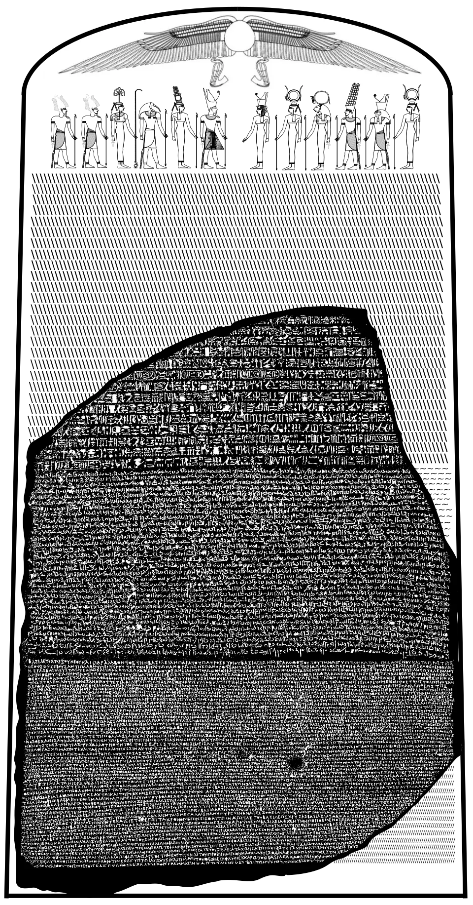
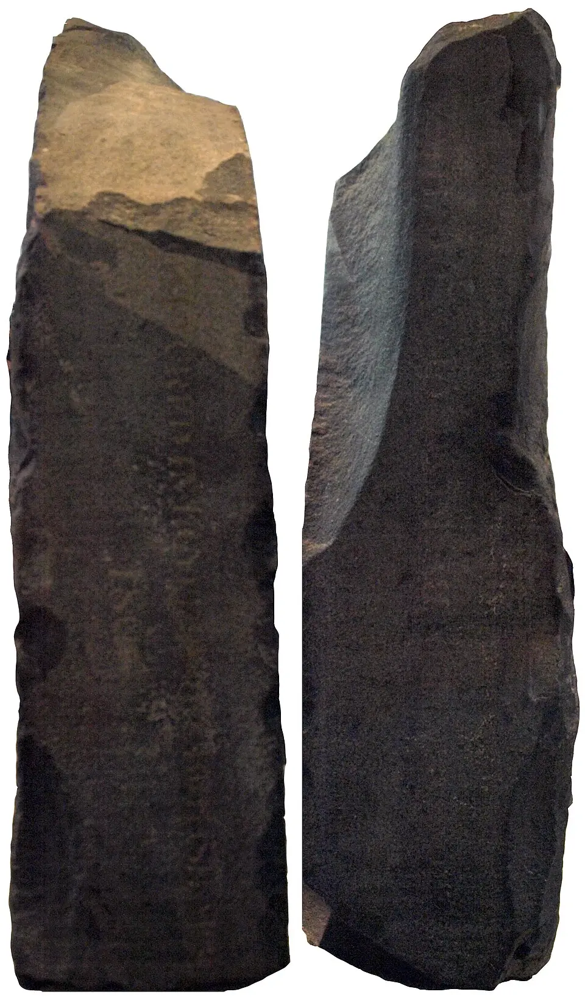
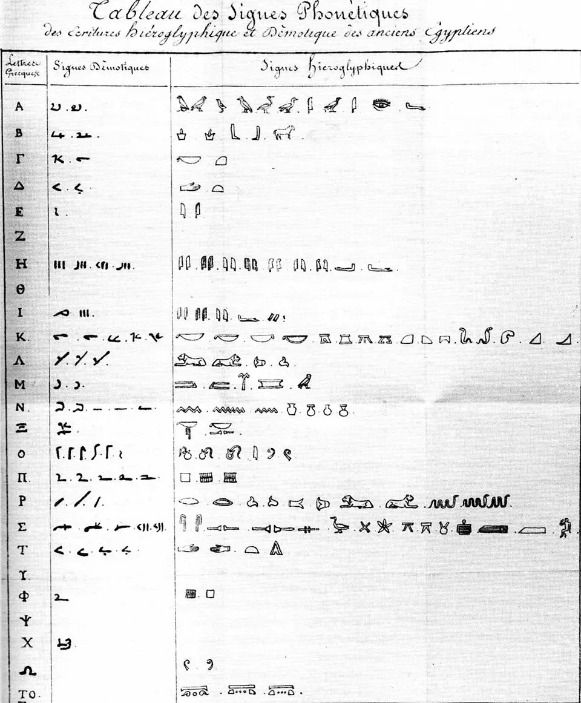
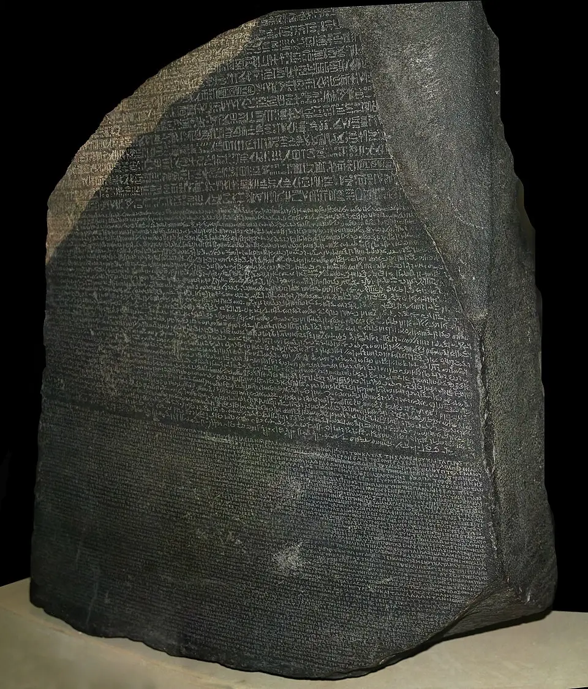

Phiến đá Rosetta: chìa khóa mở chữ tượng hình
Tháng 7 năm 1799, lính Pháp phá một bức tường trong pháo đài gần Rashid và lôi ra một phiến đá khắc ba loại chữ. Phải mất thêm 23 năm, người ta mới đọc được dòng chữ trên cùng.

Giữa tháng 7 năm 1799, lính Pháp dưới quyền đại tá d'Hautpoul đang gia cố pháo đài Julien, cách cảng Rashid, người châu Âu gọi là Rosetta, vài dặm về phía đông bắc. Khi phá một bức tường cũ, họ để lộ một phiến đá có khắc chữ ở một mặt. Trung úy Pierre-François Bouchard nhận ra nó có thể quan trọng. Phiến đá ấy sẽ trở thành chìa khóa để đọc lại thứ chữ mà khi ấy không còn ai đọc được.
Một sắc lệnh tôn vua
Phiến đá là một mảnh của tấm bia lớn hơn, bằng đá granodiorite, cao 112,3 cm, rộng 75,7 cm, dày 28,4 cm, nặng khoảng 760 kg. Nội dung là một sắc lệnh do hội nghị tư tế họp ở Memphis ban hành, ngày tương ứng 27 tháng 3 năm 196 TCN, năm thứ chín triều vua Ptolemy V. Vị vua này lên ngôi năm 5 tuổi, sau khi cha mẹ bị giết trong một âm mưu cung đình, và nhà Ptolemy cần lòng trung thành của giới tư tế.
Sắc lệnh được khắc ba lần: chữ tượng hình, chữ Demotic dùng hằng ngày, và tiếng Hy Lạp cổ của triều đình. Phần chữ tượng hình hư hại nặng nhất, chỉ còn 14 dòng cuối, dòng nào cũng vỡ ở bên phải. Tấm bia có lẽ ban đầu đặt trong một ngôi đền, có thể ở Sais. Ngôi đền ấy có lẽ bị đóng cửa khoảng năm 392, khi hoàng đế La Mã Theodosius I ra lệnh đóng các đền ngoại giáo, và về sau phiến đá bị dùng làm vật liệu xây pháo đài.
Từ chiến lợi phẩm của Pháp đến Bảo tàng Anh


Đoàn viễn chinh của Napoleon mang theo 151 nhà khoa học và kỹ thuật. Báo cáo về phiến đá được đọc tại Viện Ai Cập ở Cairo ngày 19 tháng 7 năm 1799, và đã nêu đúng rằng ba bản khắc là một nội dung. Năm 1800, nghệ sĩ Nicolas-Jacques Conté nghĩ ra cách dùng chính phiến đá làm khuôn in, nhờ đó bản in đến được các học giả châu Âu.
Napoleon về châu Âu tháng 8 năm 1799, bỏ lại quân đội. Năm 1801, quân Anh đổ bộ, quân Pháp thua ở Alexandria. Khi hai bên tranh cãi về các hiện vật, nhà khoa học Étienne Geoffroy Saint-Hilaire dọa rằng người Pháp thà đốt hết còn hơn giao nộp. Cuối cùng phiến đá về tay Anh, cập cảng Portsmouth tháng 2 năm 1802 trên chiến hạm bắt được của Pháp HMS Égyptienne. Hai cạnh đá được sơn thêm dòng chữ trắng ghi rằng nó bị quân đội Anh chiếm năm 1801 và được vua George III tặng lại. Từ tháng 6 năm 1802, phiến đá gần như luôn được trưng bày ở Bảo tàng Anh, với số hiệu EA 24.
Cuộc đua giải mã


Phần Hy Lạp được dịch đầy đủ và xuất bản năm 1803. Nhà ngoại giao Thụy Điển Johan David Åkerblad nghiên cứu phần Demotic. Nhà bác học Anh Thomas Young tìm ra nhóm ký hiệu ghi âm tên Ptolemaios trong phần chữ tượng hình, và đếm được khoảng 80 điểm giống nhau giữa hai phần chữ Ai Cập.
Người đi đến cùng là Jean-François Champollion, một thầy giáo ở Grenoble. Từ nhỏ ông học tiếng Copt với một linh mục người Copt ở Paris, vì tin đó là giai đoạn cuối của tiếng Ai Cập cổ. Năm 1822, ông nhận được bản chép chữ trên cột tháp Philae, đối chiếu tên Kleopatra và Ptolemy, rồi dựng được một bảng ký hiệu ghi âm. Bước quyết định đến khi ông đọc các văn bản từ Abu Simbel: ông nhận ra tên Ramesses và Thutmose, và đọc được động từ "ms" nghĩa là sinh ra, giống từ tiếng Copt. Chữ tượng hình hóa ra vừa ghi âm vừa ghi ý.
Bằng chứng nói gì


Ngày tháng của phát hiện được ghi rõ. Ngày 27 tháng 9 năm 1822, Champollion đọc bức thư gửi Bon-Joseph Dacier, thư ký Viện Hàn lâm Văn khắc, trước Viện. Bức thư ban đầu đề gửi thầy cũ Silvestre de Sacy, người về sau thành đối thủ; Champollion gạch tên ông đi và thay bằng tên Dacier. Phía Anh thì cho rằng công của Young bị ghi nhận không đầy đủ, và tranh cãi về quyền ưu tiên kéo dài nhiều năm.
Cảnh nổi tiếng nhất thì là giai thoại. Theo các tiểu sử, ngày 14 tháng 9 năm 1822 Champollion chạy dọc phố tìm anh trai Jacques-Joseph, kêu lên "Je tiens mon affaire!" (Tôi nắm được rồi!), rồi ngã quỵ vì xúc động. Câu chuyện được chép lại nhiều lần, nhưng không có biên bản nào ghi lúc nó xảy ra.
Chi tiết bên lề: phiến đá dưới lòng đất
Năm 1917, lo London bị ném bom, Bảo tàng Anh đưa phiến đá xuống một nhà ga của tuyến đường sắt ngầm chở thư ở Mount Pleasant, sâu 15 m, và để ở đó hai năm. Ngoài thời chiến, nó chỉ rời bảo tàng một lần: tháng 10 năm 1972, sang Louvre một tháng, đặt cạnh bức thư gửi Dacier nhân kỷ niệm 150 năm.
Cụm từ "phiến đá Rosetta" cũng đã thành cách nói chỉ mọi chìa khóa giải mã, từ phổ của nguyên tử hydro đến bộ gen.
Dư âm đến hôm nay
Theo hồ sơ của bảo tàng, đây là hiện vật đơn lẻ được xem nhiều nhất ở Bảo tàng Anh, và tấm bưu thiếp in hình nó bán chạy nhất trong nhiều thập kỷ. Năm 2003, Zahi Hawass, khi đó đứng đầu Hội đồng Cổ vật Ai Cập, đòi trả phiến đá về Ai Cập. Năm 2005, Bảo tàng Anh tặng Ai Cập một bản sao kích thước thật, đặt ở bảo tàng quốc gia Rashid, gần nơi tìm ra bản gốc. Cụm từ "phiến đá Rosetta" cũng đã thành cách nói chỉ mọi chìa khóa giải mã, từ phổ của nguyên tử hydro đến bộ gen.
Phiến đá không phải là duy nhất: người ta đã tìm thêm ba bản sao không đầy đủ của cùng sắc lệnh và vài sắc lệnh song ngữ khác. Nhưng nó là bản đến đúng lúc, và đã cho Champollion điểm tựa đầu tiên.